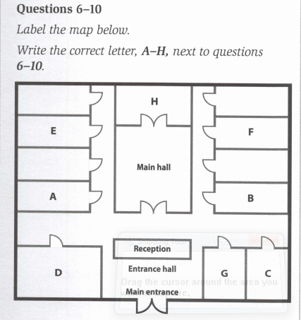
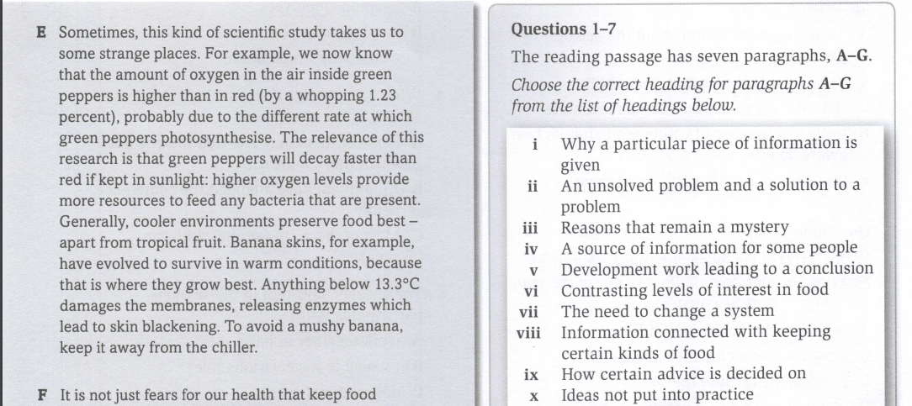
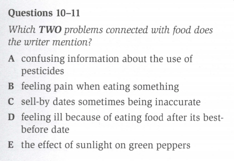

Information text
Listen and answer Question 1- 10.
I. Complete each sentence with the correct form of the words in brackets.
1. Healthy eating is a matter of education so that people know what to eat. (educate)
2. Yesterday she him for being too lazy to keep fit. (critic)
3. Even if exercise is , it's better than no exercise. (regular)
4. Going for a run on a day is a nice way to spend your time. (sun)
5. exercise is essential for everyone. (day)
6. Sometimes children don't want to eat healthy food because of its . (appear)
7. There is a connection between being healthy and having a high level of . (happy)
8. People who are can have health problems that fitter people don't have. (active)
II. Complete the second sentence so that it has a similar meaning to the first. Use the correct form of the underlined word in the first sentence.
2.
3.
4.
5.
6.
Listen and answer Question 1- 10.
1.
2.
3.
4.
5.

6. Setting Up a Fitness Centre
7. Healthy Eating Schemes
8. Transport Initiatives
9. Running Sports Teams
10. Conference Coordinator's Office
I. Complete these sentences with the plural or uncountable form of the words in the box.
|
group research job way knowledge
work programme equipment information suggestion |
1. More and more people nowadays are following fitness programmes.
2. It is easy to find on how to stay fit and healthy.
3. People with sedentary spend all day sitting down.
4. According to ,the percentage of overweight people is growing.
5. This booklet contains many useful on how to keep fit.
6. Some people prefer to exercise in and so they join fitness classes.
7. At our gym, we have all the latest fitness for people to use.
8. Scientists are always increasing their of how the body works.
9. This book suggests a number of to help you lose weight.
10. My sister is looking for at a health center as a receptionist.
II. Choose the correct option in each of these sentences.
2.
3.
4.
5.
6.
7.
8.
9.
10.
Reading Section 2
Read the text carefully and answer Questions 1 - 13.


2.
3.
4.
5.
6.
7.
8.
9.
10.
11.
12.
13.